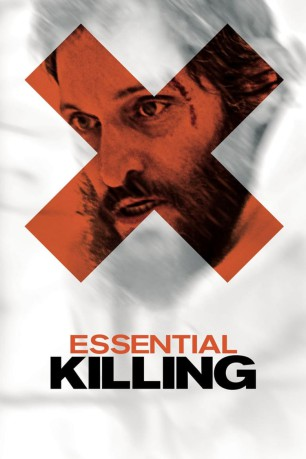
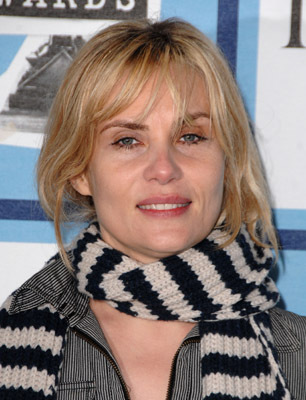
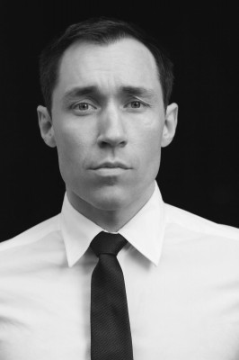

#8226 Essential Killing
 
 IMDB-Wertung: 6.1 / 10
IMDB-Wertung: 6.1 / 10  Tomatometer: 84
Tomatometer: 84  Metascore: 0
Metascore: 0 
Der Taliban-Soldat Mohammed wird vom US-Militär in Afghanistan aufgegriffen und in eine geheime Militärbasis in Osteuropa gebracht wird. Durch einen Zufall findet er sich plötzlich in Freiheit wieder und muss im fremden Umfeld zurechtkommen. Erbarmungslos gejagt von einer Armee, die offiziell gar nicht existiert, muss Mohammed ständig zum Töten bereit sein, um selbst zu überleben.
Jahr: 2010
Dauer: 84 Minuten
FSK: 16
Land: Polen Studio: Ascot Elite Home EntertainmentTonspuren: DTS - ,
Untertitel: Deutsch,
Auflösung: 1080p (1920x1040) Größe: 4679 MB
Genre: Thriller, Krieg
Regisseur: Jerzy Skolimowski
Drehbuch: Jerzy Skolimowski
Soundtrack: Pawel Mykietyn
Darsteller:
 Vincent Gallo als Mohammed
Vincent Gallo als Mohammed-  Emmanuelle Seigner als Margaret
- Iftach Ophir als American Contractor 2
- Nicolai Cleve Broch als Helicopter Pilot 1
-  Stig Frode Henriksen als Helicopter Pilot 2
- David L. Price als Interrogation Officer
- Zach Cohen als American Contractor 1
- Tracy Spencer Shipp als Young Soldier in Suv
- Mark Gasperich als Head of Pursuit Team
- Phillip Goss als Military Doctor
- Klaudia Kaca als Woman on a Bicycle
- Dariusz Juzyszyn als Logger
- Raymond Josey als American Soldier
- Robert Mazurkiewicz als Hunter
- Janusz Wojtarowicz als Margaret's Husband
- Pawel Baranek als Drunk Farmer 1
- Marcin Galazyn als Drunk Farmer 2
- David Jefferson als American Soldier
- Donnell Knox als American Soldier
- Geo D. Oliver als American Soldier
- Kamil Ruszecki als Soldier
- Stanislav Marek Lukasik als Soldier
- Jérôme Dassier als Suv Driver
- Geir Marring als Fisherman
- Bakar Mustapha als Extra
- Øysteun Nordli als Extra
- Patrick Gudmundsen als Extra
- Morten Muom als Extra
- Kristoffer Kaayne Kaalsaas als Extra
- Rune Øgaard als Extra
- Daniel William Verstegen als Extra
- Vilbjørn Ruus als Extra
- Hâvar Austli als Extra
- Daniel Bratterud als Extra
- Kenneth Berger als Extra
- Even Løken Bergan als Extra
- Morten Enger als Extra
- Christian Teisnes als Extra
- Stefan Johansen als Extra
- Niklas Nygaard als Extra
- Lars Markus Verpeide Bakke als Prisoner
- Lars Berg Jensen als Extra
- Kamil Hagberg als Extra
- Ivar Eeg Gusscard als Extra
- Thor Arne Thomassen als Extra
- Âge Ruste als Extra
- Jonas Garberg als Extra
- Ola Østbye Høiecgen als Extra
- Louis Rustam Foss als Extra
- Johannes Randem als Extra
Datei: X:\2010(A-F)\Essential Killing (2010, FSK16, 1920x1040).mkv seit 11.02.2018
Festplatte: HD 2009(G-Z)-2010(A-F)
 Es gibt insgesamt 95 Filme in der Gruppe '2010(A-F)'
Es gibt insgesamt 95 Filme in der Gruppe '2010(A-F)'